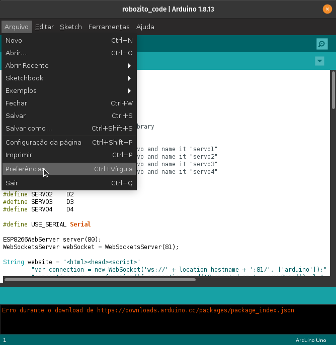
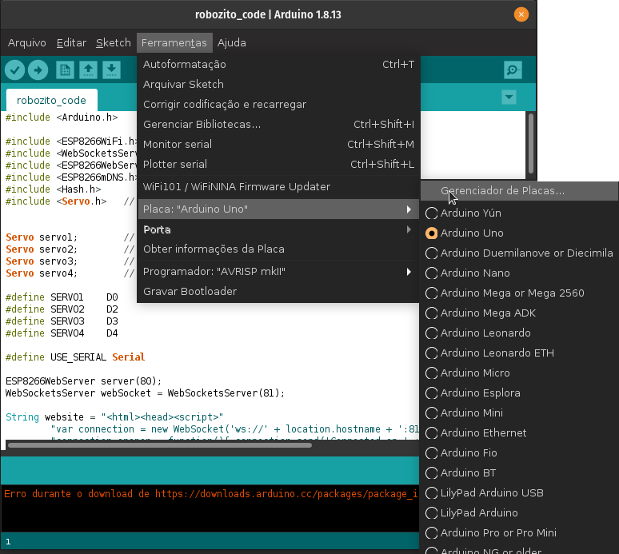
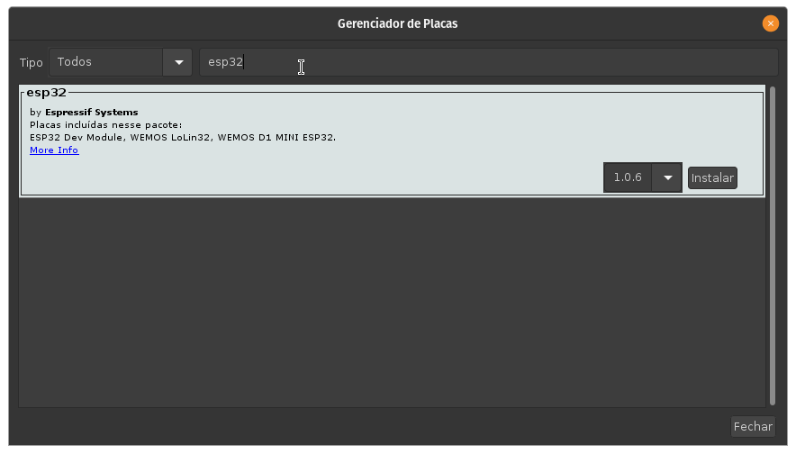
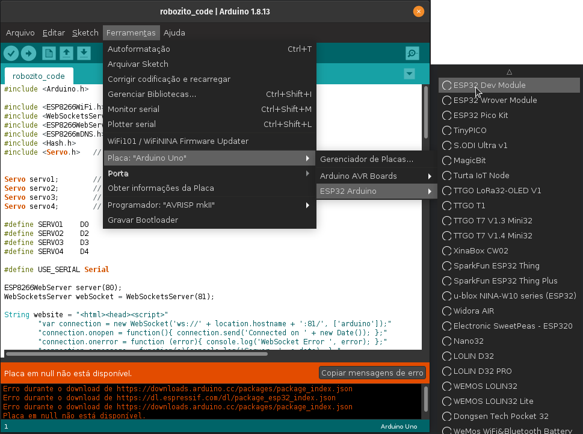
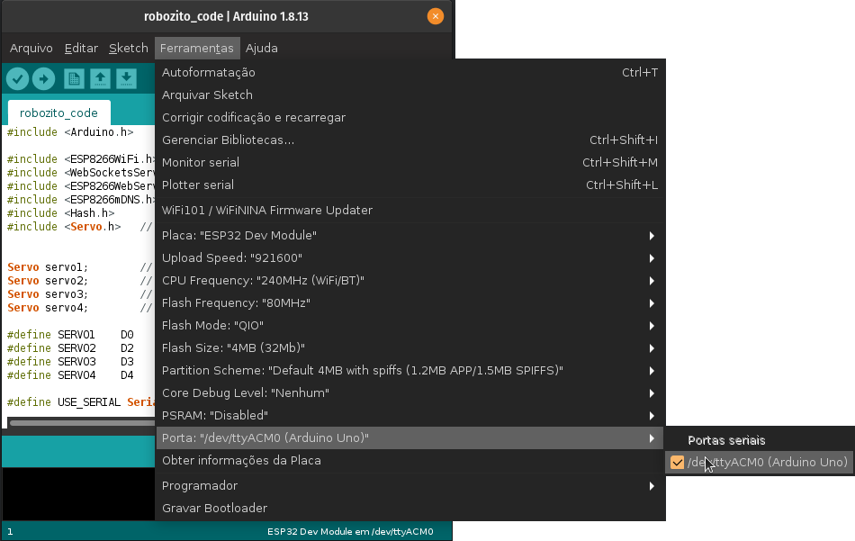
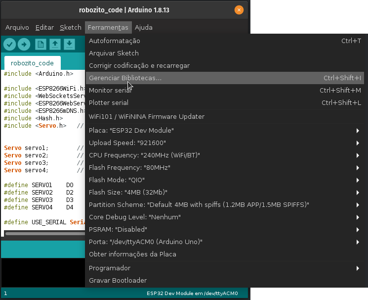

Download do Arduino IDE¶
Primeiramente precisaremos baixar o Arduino IDE para que possamos fazer a programacao da placa ESP32.
Vá à pagina do Arduino e selecione o seu sistema operacional para fazer a instalação do sistema corretamente.
Por enquanto a versão web do Arduino IDE não suporta o ESP32
Instalação do Arduino IDE¶
Após o download do instalador, prossiga com o processo de instalação normal para seu sistema operacional.
A diferença entre o arquivo .zip e o .exe é que para rodar o programa à partir do arquivo .zip precisamos abrir a pasta onde foi descompactado e clicar duas vezes no executavel. Para o arquivo .exe o instalador já deve criar atalhos para você no sistema.
Para a instalação utilizando o arquivo .exe só precisamos fazer um click duplo no instalador e seguir o passo a passo das instruções do instalador.
Para a instalação utilizando o arquivo .zip só precisamos selecionar onde serão extraidos os arquivos, realizar a extração e após finalizado abrir a pasta criada.
Configurando o Arduino IDE para o Robozito¶
Tutorial baseado no tutorial da Usinainfo
Configurando a IDE para o ESP32¶
Para usar e programar ESP32 na IDE do Arduino, precisamos primeiro que ele reconheça os modelos da placa. Para isso, primeiramente devemos ir até as Preferências, Arquivo  Preferências ou Ctrl+, , e colar a URL abaixo no campo de URLs adicionais:
Preferências ou Ctrl+, , e colar a URL abaixo no campo de URLs adicionais:
https://dl.espressif.com/dl/package_esp32_index.json

Com isso, permitimos que a IDE acesse uma pequena “base de dados” no formato .json que contém a configuração de inúmeras placas. Após isso, devemos acessar o menu Ferramentas Placa Gerenciador de Placas.

Nele, pesquise por esp32 na caixa de pesquisa. Em seguida, instale a versão mais recente do driver que irá aparecer: esp32 by Espressif Systems, conforme ilustrado na figura a seguir:

Feito isso, você deve selecionar a placa ESP32 Dev Module, no menu de placas, para programar na ESP.

Por fim, basta você selecionar a porta a qual a ESP está conectada e você estará pronto para enviar códigos para ela!

Instalando as bibliotecas¶

Para realizar a instalação das bibliotecas necessárias para nosso código funcionar corretamente devemos ir em Ferramentas Gerenciador de Bibliotecas
ou
Ctrl+Shift+I
As bibliotecas que temos que instalar são:¶
- ESP8266WiFi.h
- WebSockets
- PageBuilder
Após instaladas as bibliotecas podemos seguir para o código do Robozito